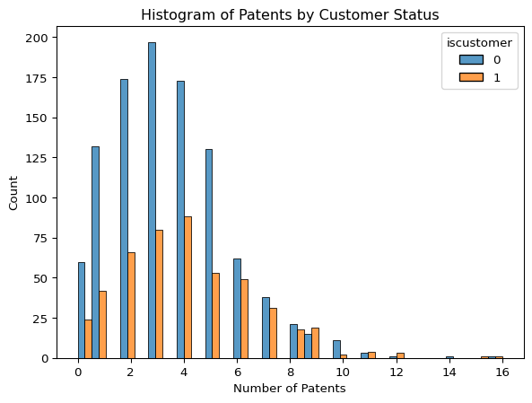
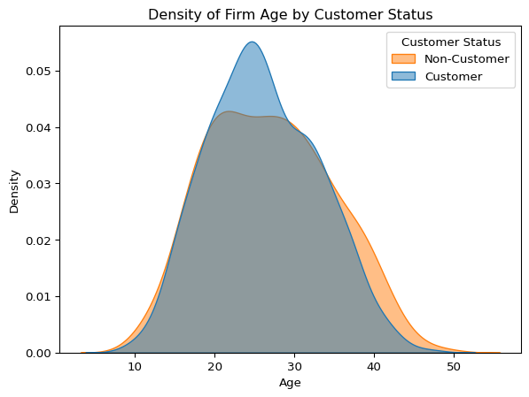

Blueprinty is a small firm that makes software for developing blueprints specifically for submitting patent applications to the US patent office. Their marketing team would like to make the claim that patent applicants using Blueprinty’s software are more successful in getting their patent applications approved. Ideal data to study such an effect might include the success rate of patent applications before using Blueprinty’s software and after using it. Unfortunately, such data is not available.
However, Blueprinty has collected data on 1,500 mature (non-startup) engineering firms. The data include each firm’s number of patents awarded over the last 5 years, regional location, age since incorporation, and whether or not the firm uses Blueprinty’s software. The marketing team would like to use this data to make the claim that firms using Blueprinty’s software are more successful in getting their patent applications approved.
Data
todo: Read in data.
import pandas as pdimport numpy as npimport matplotlib.pyplot as pltimport seaborn as snsdf = pd.read_csv("blueprinty.csv") df.head()
patents
region
age
iscustomer
0
0
Midwest
32.5
0
1
3
Southwest
37.5
0
2
4
Northwest
27.0
1
3
3
Northeast
24.5
0
4
3
Southwest
37.0
0
todo: Compare histograms and means of number of patents by customer status. What do you observe?
# Histogramsns.histplot(data=df, x="patents", hue="iscustomer", multiple="dodge", bins=30)plt.title("Histogram of Patents by Customer Status")plt.xlabel("Number of Patents")plt.ylabel("Count")plt.show()# Mean and stddf.groupby("iscustomer")["patents"].agg(["mean", "std", "count"])

mean
std
count
iscustomer
0
3.473013
2.225060
1019
1
4.133056
2.546846
481
Interpretation: The histogram above illustrates the distribution of the number of patents for firms that use Blueprinty’s software (iscustomer = 1) and those that do not (iscustomer = 0). While both distributions are right-skewed and concentrated around 2 to 5 patents, Blueprinty customers generally appear to have a higher patent count. The summary statistics confirm this visual pattern: the mean number of patents for non-customers is 3.47, whereas for customers it is 4.13. Additionally, customers exhibit a slightly higher standard deviation (2.55 vs. 2.23), indicating a bit more variability in patent outcomes among users of the software. These results suggest that firms using Blueprinty’s software tend to receive more patents on average than non-customers.
Blueprinty customers are not selected at random. It may be important to account for systematic differences in the age and regional location of customers vs non-customers.
todo: Compare regions and ages by customer status. What do you observe?
# Region distributionpd.crosstab(df["region"], df["iscustomer"])# Age distributionsns.kdeplot(data=df, x="age", hue="iscustomer", fill=True, common_norm=False, alpha=0.5)plt.title("Density of Firm Age by Customer Status")plt.xlabel("Age")plt.legend(title="Customer Status", labels=["Non-Customer", "Customer"])plt.show()

Estimation of Simple Poisson Model
Since our outcome variable of interest can only be small integer values per a set unit of time, we can use a Poisson density to model the number of patents awarded to each engineering firm over the last 5 years. We start by estimating a simple Poisson model via Maximum Likelihood.
todo: Write down mathematically the likelihood for\(Y \sim \text{Poisson}(\lambda)\). Note that \(f(Y|\lambda) = e^{-\lambda}\lambda^Y/Y!\).
todo: Code the likelihood (or log-likelihood) function for the Poisson model. This is a function of lambda and Y. For example:
todo: Use your function to plot lambda on the horizontal axis and the likelihood (or log-likelihood) on the vertical axis for a range of lambdas (use the observed number of patents as the input for Y).
todo: If you’re feeling mathematical, take the first derivative of your likelihood or log-likelihood, set it equal to zero and solve for lambda. You will find lambda_mle is Ybar, which “feels right” because the mean of a Poisson distribution is lambda.
todo: Find the MLE by optimizing your likelihood function with optim() in R or sp.optimize() in Python.
Estimation of Poisson Regression Model
Next, we extend our simple Poisson model to a Poisson Regression Model such that \(Y_i = \text{Poisson}(\lambda_i)\) where \(\lambda_i = \exp(X_i'\beta)\). The interpretation is that the success rate of patent awards is not constant across all firms (\(\lambda\)) but rather is a function of firm characteristics \(X_i\). Specifically, we will use the covariates age, age squared, region, and whether the firm is a customer of Blueprinty.
todo: Update your likelihood or log-likelihood function with an additional argument to take in a covariate matrix X. Also change the parameter of the model from lambda to the beta vector. In this model, lambda must be a positive number, so we choose the inverse link function g_inv() to be exp() so that\(\lambda_i = e^{X_i'\beta}\). For example:
poisson_regression_likelihood <- function(beta, Y, X){
...
}
todo: Use your function along with R’s optim() or Python’s sp.optimize() to find the MLE vector and the Hessian of the Poisson model with covariates. Specifically, the first column of X should be all 1’s to enable a constant term in the model, and the subsequent columns should be age, age squared, binary variables for all but one of the regions, and the binary customer variable. Use the Hessian to find standard errors of the beta parameter estimates and present a table of coefficients and standard errors.
todo: Check your results using R’s glm() function or Python sm.GLM() function.
todo: Interpret the results.
todo: What do you conclude about the effect of Blueprinty’s software on patent success? Because the beta coefficients are not directly interpretable, it may help to create two fake datasets: X_0 and X_1 where X_0 is the X data but with iscustomer=0 for every observation and X_1 is the X data but with iscustomer=1 for every observation. Then, use X_0 and your fitted model to get the vector of predicted number of patents (y_pred_0) for every firm in the dataset, and use X_1 to get Y_pred_1 for every firm. Then subtract y_pred_1 minus y_pred_0 and take the average of that vector of differences.
AirBnB Case Study
Introduction
AirBnB is a popular platform for booking short-term rentals. In March 2017, students Annika Awad, Evan Lebo, and Anna Linden scraped of 40,000 Airbnb listings from New York City. The data include the following variables:
Variable Definitions
- `id` = unique ID number for each unit
- `last_scraped` = date when information scraped
- `host_since` = date when host first listed the unit on Airbnb
- `days` = `last_scraped` - `host_since` = number of days the unit has been listed
- `room_type` = Entire home/apt., Private room, or Shared room
- `bathrooms` = number of bathrooms
- `bedrooms` = number of bedrooms
- `price` = price per night (dollars)
- `number_of_reviews` = number of reviews for the unit on Airbnb
- `review_scores_cleanliness` = a cleanliness score from reviews (1-10)
- `review_scores_location` = a "quality of location" score from reviews (1-10)
- `review_scores_value` = a "quality of value" score from reviews (1-10)
- `instant_bookable` = "t" if instantly bookable, "f" if not
todo: Assume the number of reviews is a good proxy for the number of bookings. Perform some exploratory data analysis to get a feel for the data, handle or drop observations with missing values on relevant variables, build one or more models (e.g., a poisson regression model for the number of bookings as proxied by the number of reviews), and interpret model coefficients to describe variation in the number of reviews as a function of the variables provided.